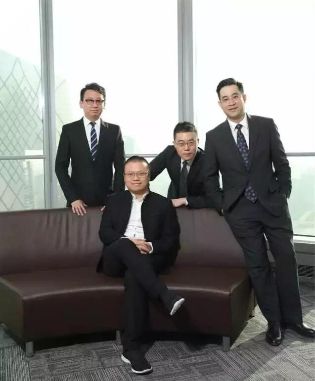
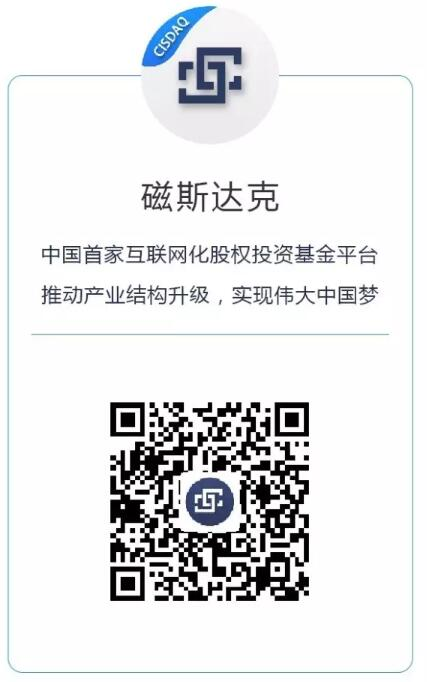

19岁大学休学创业写下20年人生规划时，我写下了我的使命：人类的感性精神世界是否可以推算出一个像物理学世界一样永恒不变的理性公式，从而来指导人的行动？为这个哲学命题，我将用商业做为实践环境，来实践这种哲学实现的可能性，那是否为此给自己20年的时间来在商业活动中测试这种哲学，如果能在商业社会中实践出一个哲学结果，那正是我一生中的价值和意义所在（2006年11月刘宇于财大1604宿舍）。如今在我的四个五年规划中，我已经走完10年，对于这个哲学命题的实践和思考，从未停止，时间已过半，在形成弹簧理论之后，我开始思考这个哲学命题在商业实践的终极模式是什么？我开始试图总结出一个在商业里摸索这个哲学命题的思想体系。我试图把这个在商业里实践的哲学理论命名为“并联进化”模式。我相信这种思想将对现行的商业模式和公司式组织产生彻底变革，并在人类未来的商业活动的管理中，成为最伟大的变革。
如何理解这个“并联进化”模式，简单讲即是过去的历史上任何一个时代造就的公司模式都不能获得持续的辉煌，大部分商业模式和组织管理死亡的本质原因就是这种模式和组织自身是串联的企业经营者意志力模式，具有很强意志力的创始人对公司目标的主导意识力量通过串联的累积效应达成目的，所以在公司的团队架构，经营目标都使用了倒推式的分层管理分级实现结构，基于这个分层管理和分级目标来设计团队架构，目标激励模式，表面上看这是达成目标最有效的方法但往往这种模式反而最终达不成目的，而就算达到目的时候也代表企业开始走向衰退，企业也终将失去生命力。而要实现一个企业获得更加快速永恒的竞争力，我提出更高层级的一个思想体系，即：“并联进化”模式，这个模式打破了正常公司经营的一切正确式逻辑，在实现企业目标过程中，最重要的力量是进化力量，而这个进化力量一旦进入分层管理的目标管理逻辑就会被宣布死亡，我把这种传统历史的公司管理发展模式总结为串联式死亡管理，最终结果一定是死的。所以创建一个最具竞争力的公司核心方法是创建一种自然进化的组织，在这个组织里，总部没有总目标，没有总规划，只有在每一个细分单元组织中单体简单傻瓜式目标，但是每一个细分的组织单元没有上级，也没有管理者，他们只是在做自然进化，在这个进化的过程中，务必使得每一个单元的进化都是并联发展的，此时相并联的细分单元会根据更好的适应性选择进化式的合作和发展，并形成更具竞争力的新单元，而没有生存能力的单元会自然消亡，这种并联式的进化会使得整个组织在每一个细分单元获得最高效率的发展和进化式重组，最终用自然而然的力量形成整个组织永恒进化的能力，整个系统逻辑上获得永生，结果就是整个组织具有破坏性的革命性的竞争优势，而组织的决策层没有战略目标设定，也不设计管理层级，最终决策层只做整个被动的自然选择而不做主动选择，而此时会发现组织实现曾经设计的目标变得轻而易举，我把这个思想体系命名为：“并联进化式组织”。
2014年11月15日，在我28岁生日正式组建我第一家投资公司正和磁系开始，摆在我面前两条路，第一条路径是按照常规的逻辑给自己设定9年实现一个目标，这个投资公司第一个三年要建立一级市场产业投资，第二个三年建立上市公司的投资，第三个三年开始建立全球产业投资，那时投资规模实现百亿级别，第二条路是用这个并联进化的哲学理论来实践自己的实践指导，不设计目标，也没有下级，按照这个思想体系只进行这个“并联进化”的模式搭建，这条路可能最终结果是一事无成，死的不知所终。在这两条路面前第一条我最终可能会有一些确定性的成绩而第二条没有任何可预期确定的结果，但是从我思想意识里的逻辑第一条实际上是传统的串联思维并终极走向死亡的模式，第二条虽然可能会一事无成但是具有重大哲学探索价值，所以我坚定的选择了测试第二条路径。
这个测试虽然经历了各种漫无目的的不确定性发展，如今不到两年，却让我深深体会到这种思想的巨大优势，我们在正和磁系最初并联了两个业务，一个互联网孵化业务一个投资业务，之后互联网孵化业务碰到京东的李大学之后，我们迅速进化成了磁云，这个进化我们把控制权和大股东给了李大学，这是自然而然的进化结果，磁云科技随后成为了中国互联网+第一孵化器，第二个业务我们在并联的搭建募资和投资业务时，投资总监徐飞和法务总监刘铁铮进化出了磁斯达克于是磁斯达克开始被进化出来，短短一年多管理20多亿的基金，至今还在高速发展，估计很快我们也将失去控制权，在磁斯达克因为法律问题不能做二级市场之后一个偶然的机会我们又并联发展出一个专注做上市公司并购重组的磁晅资本，目前已经参股两家上市公司，在这些投资业务中，因为部分LP业余的避险要求我们并联出了量化投资公司量磁投资，而在帮助上市公司联合建立投资基金时，我们发现了海外并购的一条有效通道这条通道开始迅速发挥巨大作用，于是一个人看上去松散没有管理的组织开始形成，各自单元自我进化，而没有能力进行重组和修正的单元在自行消失，总部组织开始不停的失去每一个优质进化单元的控制权，而新的单元总会自然而然的进化出来，这种进化使得这个公司总部在漫无目的实现快速扩张。
转眼两年不到我们当初9年设计才能完成的目标，现在看好像都差不多实现了，更可怕的是我们自己却不知道自己已经跑的这么快，我们也不知道哪些公司会死亡，哪些公司会获得巨大成功，什么时候会到哪里去，但是有一点可以确认：一个去中心化、分布式、各级单元自进化的生物性组织开始形成。一个复杂的很难复制的负责的自生长自运转的体系开始形成，我们从建立一个能运转的最简单的系统开始，然后把不同的模块再进化出简单的系统，这种进化开始形成生长环境当把各个能独立运作的系统模块逐步进化起来再并联组装起来，通过时间磨合，复杂性就诞生了，这种复杂的系统将会拥有自生长的能力，并在那一个节点开始通过自我进化的能力建立永久的排他性竞争壁垒，同时创造各种新的无中生有，这种进化使得我们开始创造出一种更高层级的企业模式：一个并联进化式的具有自进化的生物属性的伟大公司。
刘宇 2016-08-03 于长白山

磁斯达克是中国首家互联网化股权投资基金平台。磁斯达克将基金的“募集，投资，管理，退出”环节，用互联网方式在线化，实现投资的高效和透明；在业务上，汇集大量投资精英，以双GP模式和上市公司及产业龙头成立股权投资基金，进行产业投资，并购和整合，推动中国产业结构升级。成立2年来，已经在在汽车后服务、家居建材、大健康和大文化等消费升级领域设立了产业投资基金，规模总额近30亿元。
